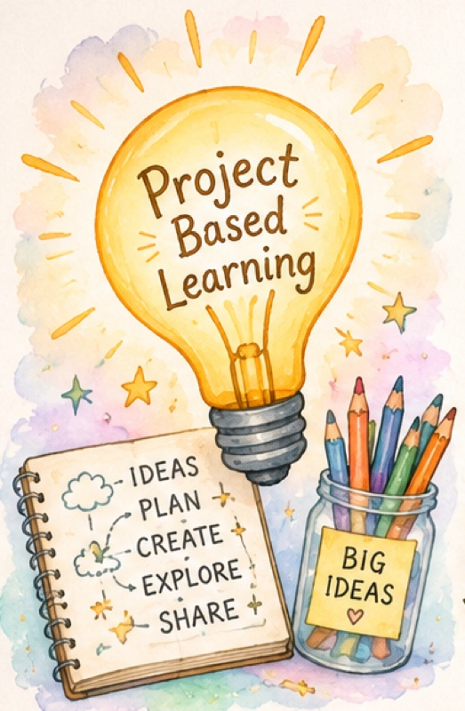
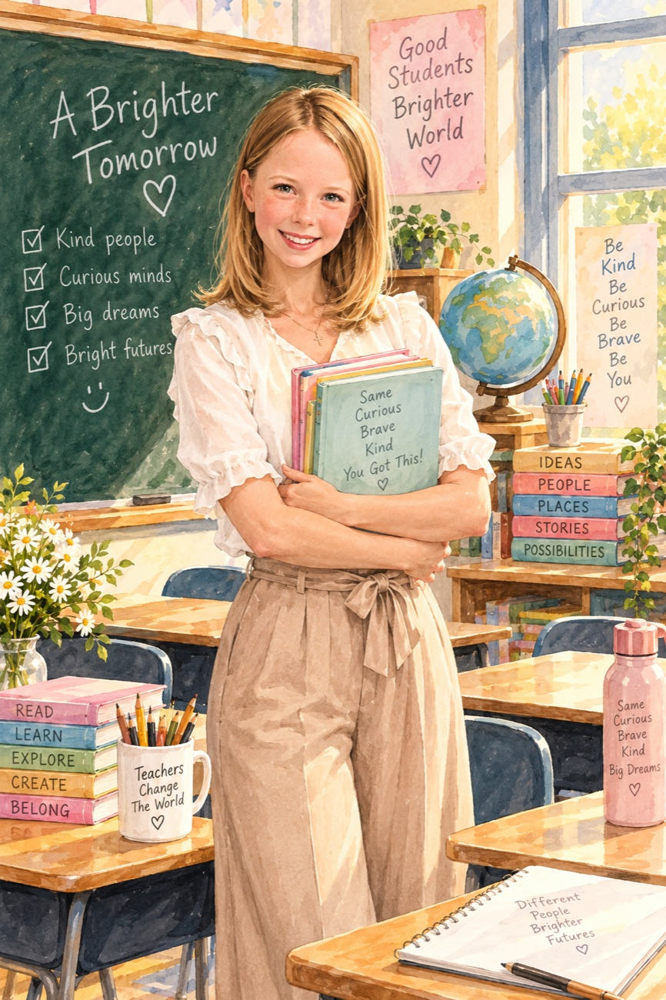
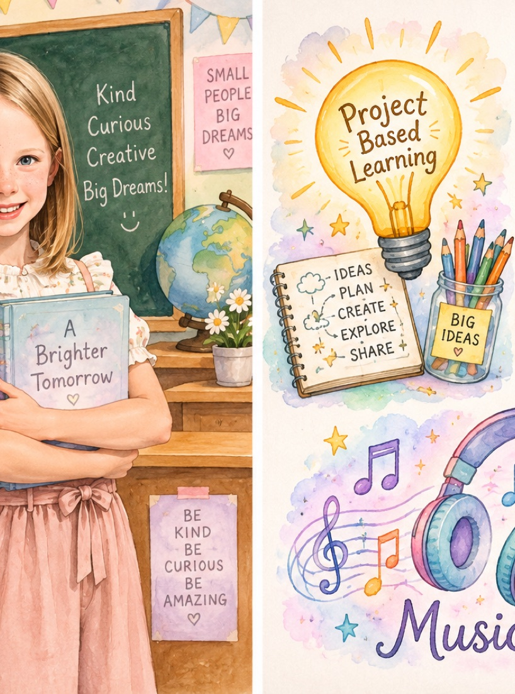
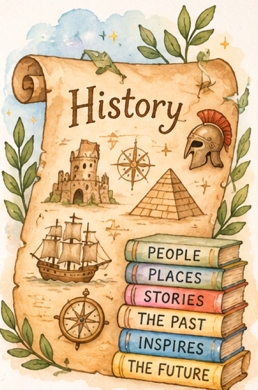
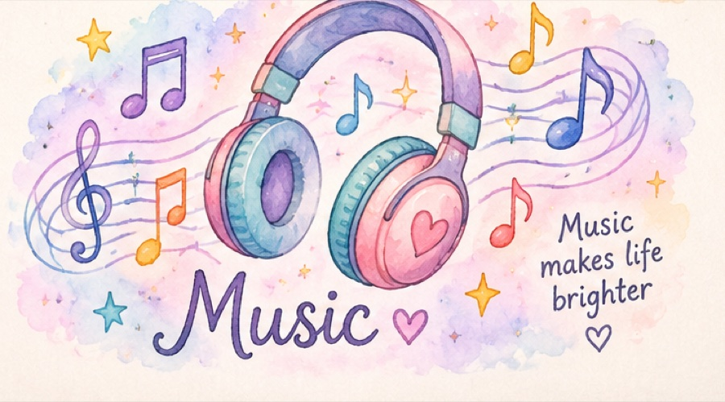

P.B.L.
We get a big question and make something real to answer it. You plan it yourself, so it never feels like normal work.

by Chloe
Teachers help you read, and learn, and grow. I want to do that for little kids.

These are the ones I look forward to — and the ones I would love to teach one day.

We get a big question and make something real to answer it. You plan it yourself, so it never feels like normal work.

Stories about real people who lived ages ago. My favourite bit is finding out how different their day was from mine.

Singing and playing together is the loudest, happiest part of the week. Music makes life brighter.
Chloe · Class 2B